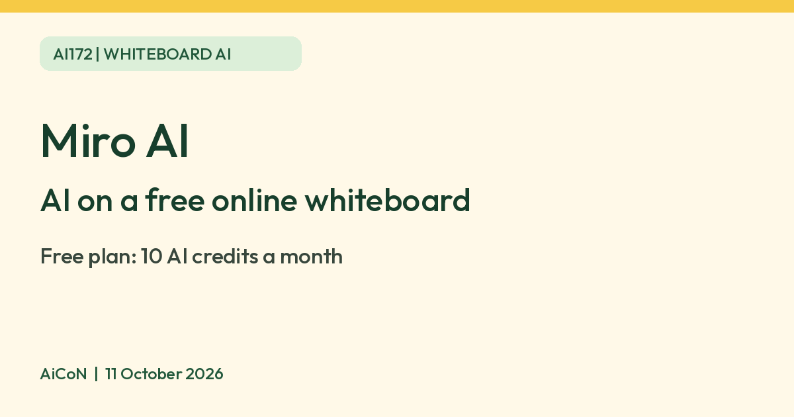

Miro AI on the Free plan: 10 credits a month
Miro says its Free plan includes 10 AI credits a month. An image costs 3 credits, a diagram 5, and the Free plan allows 3 active boards.

What it is
Miro is an online whiteboard where you build boards with sticky notes, diagrams, docs and tables. Miro's help pages say its AI features can generate images, docs, diagrams and slides on a board, and work with Sidekicks, which Miro describes as specialised AI collaborators on every board. Most AI actions use credits from a shared monthly balance; AI search is listed at zero credits.
Is it free
Yes, with small limits. Miro's help page lists the Free plan at 10 AI credits a month, refreshed on the first day of each calendar month and not carried over. Credits are shared by your whole team. Miro lists these costs per action: a sticky note 1 credit, text 1, a doc 2, an image 3, a diagram 5 and a table 5. When credits run out, AI actions pause until the next refresh. AI search costs 0 credits. Miro says the Free plan has limited access to Sidekicks and 5 Flow runs per team member, and that full AI Workflows need a Business plan. The Free plan also allows only 3 active boards. The credit balance is not displayed on Free plans, and Miro says it cannot predict the exact credit cost of a prompt in advance. Some prompt-based actions vary with context, model and complexity. Free teams cannot buy extra credit bundles without upgrading. We did not verify an Indian rupee checkout total, so no paid price is quoted. These are usage credits, not cash or a promise of ten free tasks.
Is it available in India
We could not confirm this. The Miro pages we read do not list countries. Try it at miro.com.
Privacy before using AI
Miro says it collects Free plan AI interactions for feature improvements: prompts, content explicitly selected as AI context, and generated outputs. It says it does not collect other board content for this purpose, de-identifies the improvement data, keeps it separate from production systems, and does not use it to train or fine-tune models or share it with model providers for their training.
A Company admin can switch off this collection at avatar > Admin Console > Security > Miro AI > Use data for Miro AI improvements. Miro says this does not affect AI use and previously collected data is no longer used for improvements. This is an improvement-use control, not a promise that all stored board content is deleted.
Depending on the feature, AI runs in Miro or Microsoft Azure AI, and interactions may be processed outside the selected data region. The general security page says AI data is not retained, while the more specific Free plan improvement page describes collected interaction datasets. Do not read the general wording as a blanket no-storage promise. Remove personal details, employer secrets and customer data from prompts and selected context, and follow your organisation's rules.
How to try it
- Sign up for a Free plan at miro.com.
- Open a board and use the AI options to make a diagram or a doc.
- Budget using the published costs above; regenerating uses credits again and Free does not show a balance. Review the output before using or sharing it.
Limits to know
- Ten credits go fast. Two diagrams use the whole month.
- Miro says credits are used when a result is generated, so discarding or undoing a result does not refund them.
- Miro says every user you invite by email on the Free plan joins your team, and boards in a free team are shared with the whole team. Private boards within a multi-member team need a paid plan. If you create a solo free team and do not invite others, Miro says only you can access its content; check Team settings > Active users and the Share dialog before adding sensitive content. Do not put private details on a shared free board. That last sentence is AiCoN advice.
- We did not sign in, spend credits, create a board, upload data or buy a plan. Miro says generated results can be wrong and should be checked.
Frequently asked questions
Is Miro AI free?
Miro's help page says the Free plan includes 10 AI credits a month. An image costs 3 credits and a diagram costs 5.
Are the ten credits per person?
No. Free has one shared monthly balance for the team. Guests and visitors cannot run AI actions. The free allowance resets on the first day of each calendar month and unused credits do not carry over.
Are free boards public to everybody?
Not automatically. They are shared with the whole free team, and inviting someone by email adds them to that team. A solo free team can stay solo. Check both team membership and board link-sharing before using it.
Sources: Miro AI credits, Miro Free plan, Miro AI quality improvements, Miro AI admin security. Checked 11 October 2026.